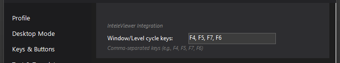

Cycle Window/Level
One button steps InteleViewer through your window/level presets in order — lung, bone, soft tissue, brain — without reaching for the keyboard.

What it does
InteleViewer binds window/level presets to function keys, but hitting F4/F5/F7 while your hand is on the mic is awkward. This action sends the next preset key in your configured list to InteleViewer each time you trigger it, cycling through them in order. Put it on a PowerMic button and each press steps you through your presets: soft tissue → lung → bone → back to soft tissue.
How to turn it on / set it up
- Settings → Behavior → InteleViewer Integration → Window/Level cycle keys: enter the comma-separated keys InteleViewer has your presets on, in the order you want to cycle them (e.g.
F4, F5, F7, F6). - Map the Cycle Window/Level action to a mic button or hotkey under Settings → Keys & Buttons.
The keys must match your InteleViewer preset bindings — check InteleViewer's own preferences if you're not sure which function key does what.
Using it
Press your mapped button; InteleViewer receives the next key in the list and switches presets. Press again for the one after that; the cycle wraps back to the first key at the end.
Tips & gotchas
- This sends keystrokes to InteleViewer, so it acts on whatever InteleViewer would do with that key — if your presets differ per modality, the same cycle applies everywhere.
- Order the list to match your reading habit: the two presets you flip between most should be adjacent so one press toggles between them.
- If you'd rather have direct one-press buttons per preset (instead of a cycle), the InteleViewer Buttons toolbar does that — each toolbar button can send a single fixed keystroke.